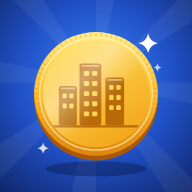

CapitalForge Lite · Destek
Sık sorulanlar ve iletişim · FAQ and contact
İletişim
Hata, öneri ya da silme isteği için info@conforcus.com adresine yaz. Cihaz modelini ve iOS sürümünü eklersen hızlı bakarız.
Sık sorulanlar
- Nasıl oynanır? Her zincirin üç kademesi var: ham, işleme, satış. Darboğazı büyüt, kampanya aç, rakibi geç. Şehir dolunca sat; her satış kalıcı yıldız bırakıyor.
- Balonlar ne? Şehirde ara sıra bir fırsat balonu çıkıyor. 12 saniye içinde dokunursan ödül kasaya geçiyor.
- Kayıt nerede? Cihazında. Uygulamayı silersen ilerleme de gider; bulut kaydı yok.
- Lig hesabımı nasıl silerim? Lig → Hesabı sil. Puanın ve özel lig üyeliklerin sunucudan hemen silinir; oyunun yerinde kalır.
- Puanım lige gitmiyor. Lig, puanı yalnızca gerçek cihazdan, App Store ya da TestFlight sürümünden kabul ediyor (Apple App Attest). İnternet bağlantını kontrol et; puan 5 dakikada bir ve uygulamadan çıkarken gönderiliyor.
Contact
For bugs, suggestions or deletion requests, email info@conforcus.com. Including your device model and iOS version helps.
FAQ
- How do I play? Each chain has three stages: raw, processing and retail. Grow the bottleneck, run campaigns, overtake your rival. When the city is full, sell it; every sale leaves permanent stars.
- What are the bubbles? Now and then a deal bubble pops up over the city. Tap it within 12 seconds and the reward goes into your cash.
- Where is my save? On your device. Deleting the app deletes your progress; there's no cloud save.
- How do I delete my league account? League → Delete account. Your scores and private league memberships are removed from the server immediately; your game stays as it is.
- My score isn't reaching the league. The league only accepts scores from a real device running the App Store or TestFlight build (Apple App Attest). Check your connection; scores are sent every 5 minutes and when you leave the app.